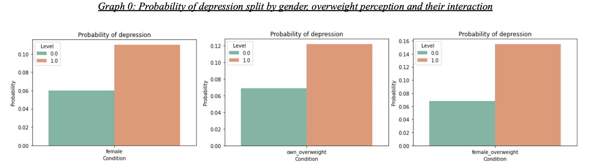

PROJECT OVERVIEW
For this coursework, the publicly available data sets from the Wave I and Wave IV surveys of the National Longitudinal Study of Adolescent Health (Add Health) are utilized to examine how being overweight and perceiving oneself as overweight during adolescence affects the likelihood of experiencing depressive feelings during and post adolescence and whether this is more likely for certain social groups.
According to an article on Adolescent Mental Health released by WHO in November this year, a seventh of the world’s adolescents struggle with mental disorders with the fourth leading cause of death among 15-19 year olds being suicide.[1] Depression is one of the main mental disorders observed among the group and one of the main reasons behind the development of the condition is social exclusion. Moreover, a study by Jung and Luck-Sikorski called ”Overweight and Lonely? A Representative Study on Loneliness in Obese People and Its Determinants” proves that a group of people more likely to be subject to social exclusion and depression is the one of obese people.[2] According to the study, they “face numerous somatic comorbidities and a shortened life expectancy, but they are also prone for social exclusion because of societies’ body norms.” Hence, it is important to examine how being overweight and perceiving oneself as overweight during adolescence affects the likelihood of experiencing depression during the same time and later on in life. To do so, this coursework uses the Add Health data to show that if one perceives oneself as overweight, this increases the likelihood of experiencing depressive feelings. Data from Wave I confirms this hypothesis and suggests a stronger effect for women compared to men. Leveraging data from Wave IV, we confirm that one's own perception of being overweight during adolescence increases the probability of feeling depressed also in adulthood.DATASET DESCRIPTION
For this coursework, the publicly available data sets from the Wave I and Wave IV surveys of the National Longitudinal Study of Adolescent Health (Add Health) are utilized. The data is based on a longitudinal study of a nationally representative sample of adolescents conducted from 1994 (Wave I) when the participants were in grades 7 to 12, to 2008 (Wave IV) when the participants were 14 years older. Wave 1 data included 6504 participants out of which 5114 were interviewed in Wave IV. After dropping observations where variables of interest have missing values, the dataset reduces to 4492 valid participants in Wave I and 3599 in the joint dataset. After transforming input, target variables, and confounders to fit a format that would enable the study of the association between one’s own perception of being overweight with depression during and post adolescence a total of 38 measures are created. Among them, the variables of main interest are the following:
- Feeling depressed (severe_depression, depressed) - target variable The measure capturing the level of depression is the one of main interest. In both waves participants were asked how often in the past week they have felt depressed. The variable “severe_depression” captures the people who felt depressed most/all of the time or a lot of times at the time of Wave I’s interview(8.4% of sample). The variable “depressed” captures the same information at the time of the Wave IV interview.(5.3% of sample) Graph 0 plots the odds of being depressed by one's own perception as overweight and by gender. It becomes clear that women have a higher likelihood of experiencing the mental condition, with a probability of 10%.(5% for men). Overweight people are twice as likely to be depressed compared to the rest of the sample(12% vs. 6%). The odds increase even more for the group of women who see themselves as overweight - up to 15%. 
- Weight own perception (own_overweight, overweight) - health related measure of interest To answer the main research question whether there is association between one’s own perception of being overweight and depression, the health related variable of interest to include in the model is the one based on participants’ answer to the question “How Do You Think Of Yourself In Terms Of Weight?”, where people who see themselves as overweight have answered either “very overweight” or “slightly overweight”. In the final dataset there are 31.8% who perceive themselves as overweight. During Wave IV BMI was captured based on which we can see that 64.2% of participants have a BMI above 25, which is considered to be over the norm.
CONCLUSIONS
The visualization of stock movements correlations can be very beneficial for investors who want to distribute risk. However, such data is often way too heavy to be handled with in-built visuals. Hence, we need to extract only the information that is valuable for the decisions we are facing. With different channels such as node size, edge width and color, we can further improve our graphs, avoid visual clutter and take data-driven actions.